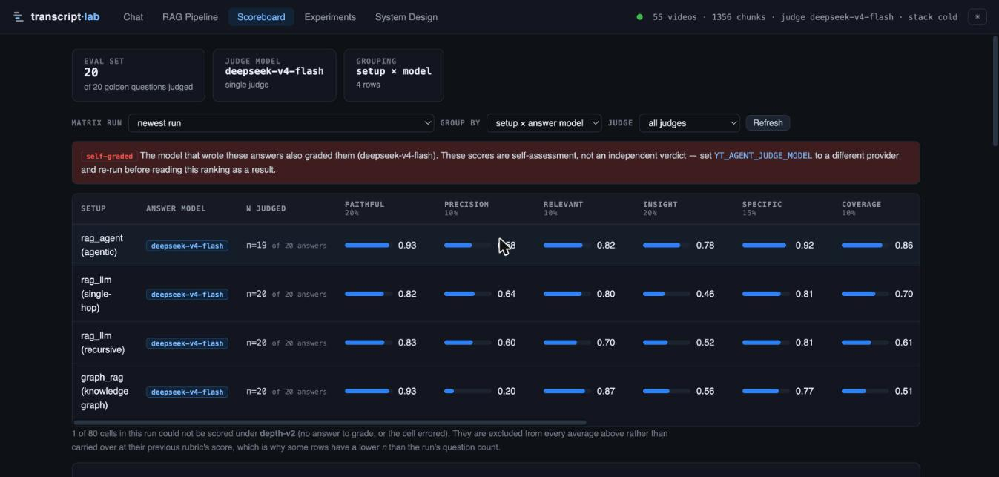
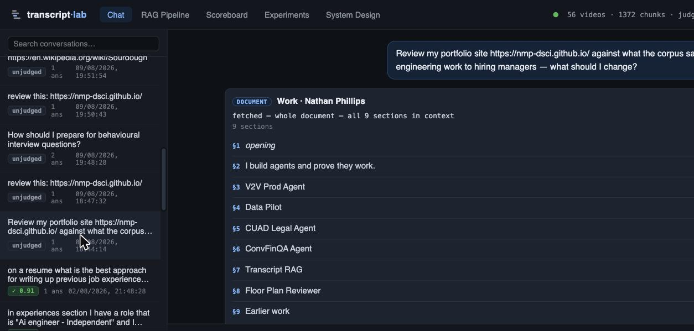
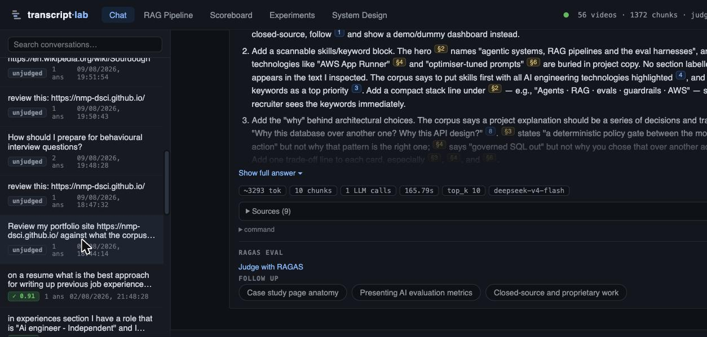
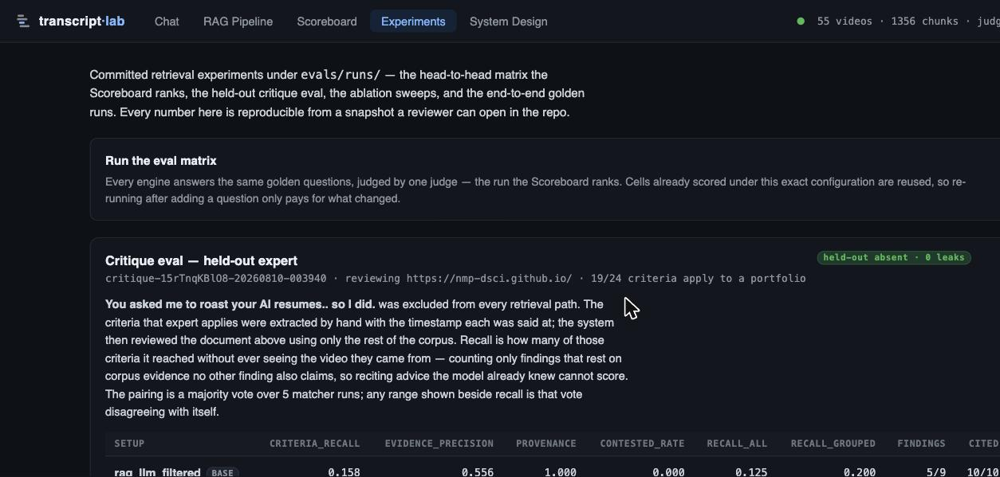
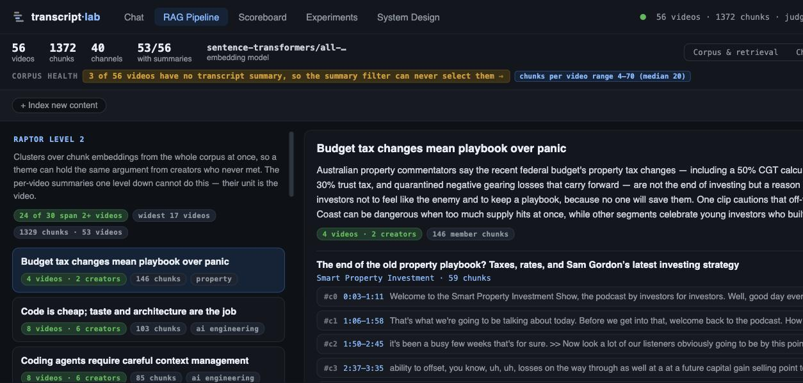

Ten vertical slices were planned. Five are delivered and independently
validated, one is delivered-but-failing, two exist as backend code with no
interface, and two were never started. Every claim below is either a screenshot of
the running app at 127.0.0.1:8021 or a committed verdict file — nothing
here rests on an agent's self-report.
| Slice | Deliverable | State | Evidence |
|---|---|---|---|
| V0 | Depth-aware judge on the Scoreboard | validated | 36/36 |
| V1 | Document review grounded in the corpus | validated | 39/39 |
| V2 | Summary pre-filter as a comparable setup | partial | deterministic gate passed; no committed run → no Scoreboard column |
| V3 | Held-out critique harness | validated metric gameable |
30/30 |
| V4 | Cross-video theme layer | failing | 23/24 |
| V4b | Ingest the two empty topics | delivered | corpus 38 → 56 videos |
| V5 | Rubric packs in the app | backend only | 17 rubrics on disk, 3 arms built, no UI, no ablation |
| V6 | Rubric-driven reviewer in Chat | not started | — |
| V7 | Disagreements as a first-class view | backend only | conflicts.py, no UI, no artifact |
| V8 | Deep-research build loop | not started | — |
Answers that synthesise several creators should outrank faithful restatements of one chunk — so the setup ranking should change.
The old composite averaged three metrics that all measure grounding. A faithful one-chunk restatement scored ~1.0; a synthesised answer could score lower. The new rubric is 40% grounding / 60% depth with a hard cap at faithfulness < 0.6.

Under the old rubric the top three sat within 0.004 of each other —
a tie that told you nothing. Under depth-v2 rag_agent takes first on
insight (0.78 vs 0.46) and graph_rag drops to third on
evidence breadth 0.20: it answers off a single subgraph. That weakness
was invisible to a composite where every term measured grounding.
The flip was then reproduced under an independent OpenAI judge (ρ = τ = +1.00 across all four setups), so it is not the model flattering itself — though the independent judge was uniformly harsher, halving the top-two margin from +0.145 to +0.071.
The review should reference specific document sections and specific expert timestamps in the same answer. Feedback that could have been written without reading the document means the hypothesis failed.


The independent evaluator checked these against the stored extraction: §4 “Data Pilot” contains zero digits while every other card carries its hero number (9/9, 84.5%, 77.1%, 6.1×, +$360/wk) — so “make every project ships with its number true” is precise, not generic. And “10,250” and “Model Evaluation” appear only in the §2 hero and in no card, making the orphan-stat point exactly right.
Reviews were being answered with the prompt that says “answer using only the
retrieved chunks” — backwards when the subject is your own document. And the
retrieval query was built from the document's subject, so a bare
review this: <url> retrieved 0 of 30 relevant chunks:
your headings are project names, so it fetched agentic-engineering talks. Building the
query from the document's kind instead took that to 29 of 30.
Until this row renders, “better than chunk-dumping” is unfalsifiable.
A resume-teardown video is excluded from every retrieval path; the criteria that expert applies are extracted by hand with timestamps; the system then reviews your portfolio using only the rest of the corpus. Recall is how many of those criteria it reached without ever seeing the video they came from.

An evaluation agent found — and I reproduced by hand — that
criteria_recall is still gameable. Exclusive-evidence
grounding killed the attack where every finding shares one quote. It did not close the
relevance hole: the citation check asks whether the quoted words appear at that
timestamp, never whether that chunk supports the finding it is attached to.
Give each recited finding its own distinct real chunk and precision goes 0.556 → 1.000, recall ceiling 0.158 → 0.526 — a system reciting generic advice beats the honest baseline by 3.3× on the metric whose entire purpose is proving the corpus produced the insight.
Written up beside the code at src/evals/KNOWN_GAP_attack2.md.
V5, V6 and V8 are all scored here, so this should close before any of
them claims a win.
Each theme should read as a claim several creators make, not as one video's outline with a fancier name.

“24 of 30 span 2+ videos” overstates it. Sixteen of thirty themes carry a single creator's voice. One theme spans four videos but takes 145 of its 146 chunks from a single podcast — the fourth video contributes one chunk. The flagship distributed-systems theme is 55% one lecture. Only 8 themes are genuinely balanced, and all 8 sit in the densest parts of the corpus — cross-video reach tracks corpus density, not the algorithm.
The intruder probe that certifies coherence proves nothing. It scored 29/30 — but a no-LLM baseline (“pick the chunk furthest from the centroid”) scores 93% on the same probes. Re-run with the intruder drawn from the nearest theme instead of a random one, the same layer scores 43%.
Eight of the corpus videos already carry a t= parameter in their source
URL, so the link builder appends a second one and YouTube honours the first. A row
displaying 1:13 opens at 0:51. The same idiom appears in three other views.
The distillate exists on disk: experts/resume-design/ holds
17 rubrics across three arms (raptor.json,
communities.json, merged.json) with a manifest. A real one reads:
“Write every experience bullet as a full qualification: what you did, how you did it,
the result, and the context it happened in” — with a machine-checkable
check field, which is the difference between a criterion and a summary.
But no pack browser reached the Experiments tab and the D2 three-way ablation never ran. By this page's own standard — a slice whose hypothesis can't be seen in the frontend fails review — V5 is not delivered.
src/rag/conflicts.py exists and the corpus was deliberately stocked to
collide (modular monolith as a real style vs a rebrand; ports-and-adapters as default vs
answering the wrong question). No conflict artifact was produced and no Disagreements
view exists. contested_rate on the Critique panel reads 0.000,
which is a floor, not a measurement.
The rubric-driven reviewer and the deep-research build loop were never begun. Both depend on V5's packs, which are not yet scored.
The cell fingerprint hashed the setup, question, models, top_k, reranker and judge — and nothing identifying the corpus. Baseline cells scored on a 38-video corpus were being compared against cells scored after ingestion took it to 53. Every cross-arm delta produced before the fix was stale-vs-fresh, not treatment-vs-control. Fixed; the digest now enters the fingerprint and is written into each run's config.
On the whole-corpus question, the filtered arm's composite rises by 0.368 —
purely because context_precision hits 1.000 when the context narrows to two
videos, while answer_correctness collapses 0.390 → 0.137. Anyone tuning the
filter against the composite will make global questions worse while watching a rising
number.
The plan assumed resume answers were polluted with property content. They are not — the embedding geometry keeps those topics apart, so no property chunk ever enters the candidate pool. What routing removes is near-neighbour contamination: “Caching in System Design Interviews” leaking into “how do I prepare for behavioural interview questions”, where the reranker keeps 3 of 8 off-genre chunks and routing takes it to 0. The filter is complementary to reranking, covering exactly its weakest case.
Chunk indices came from the model rather than the server. They are now derived by identity — video id plus timestamp — with unmatched citations dropped rather than snapped to the nearest plausible chunk. Independently confirmed safe: the minimum gap between consecutive chunk starts anywhere in the corpus is 39.7 s against a 2.0 s match window.
Every slice ran as two independent agents: one to build, one to validate. The validator never saw the builder's reasoning, wrote its own browser script, and asserted on rendered page text — never on API responses, because a correct API behind a broken UI has to fail. That separation is why this page can report a failing slice and a gameable metric at all.
The validators earned it. They broke the critique metric with a padding attack, proved the intruder probe was trivial by beating it with a no-LLM baseline, measured that a “cross-video” theme was 55% one creator, and caught that a builder's own audit had silently skipped 16 of 25 records. One builder retracted a defect it had reported; the evaluator checked the retraction and found it half wrong.
This machine's Metal compiler service is wedged: any process letting
sentence-transformers select mps hangs forever at 0% CPU, and
chromium.launch() times out — so the acceptance scripts had their assertions
executed through an already-open browser rather than under Playwright, and the server runs
under a CPU-only shim. A reboot clears it. Several failures today looked like code bugs
and were this.
demo/validate/artifacts/<slice>/verdict.json. Five commits on
agent-experts, 1166 tests passing, nothing pushed.